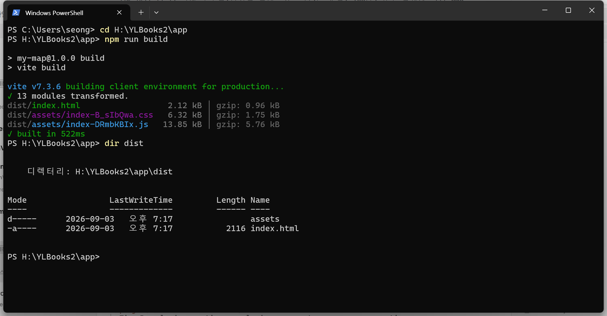
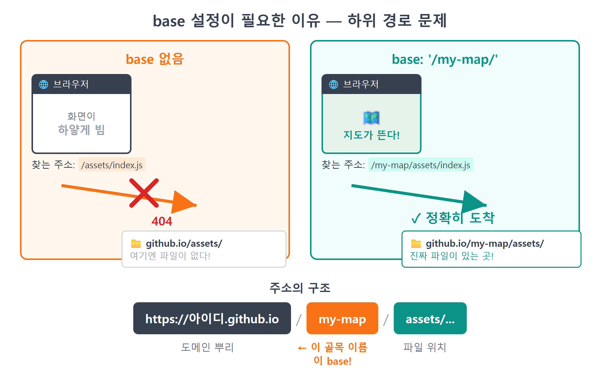
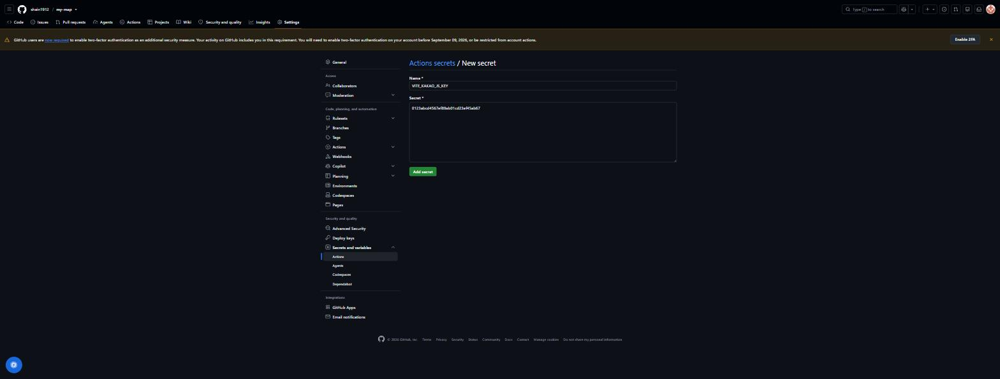
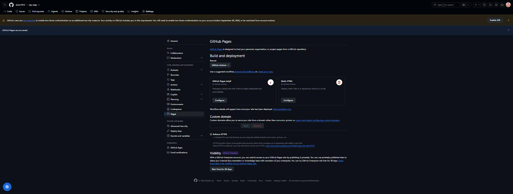
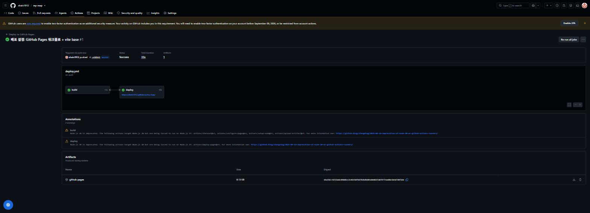
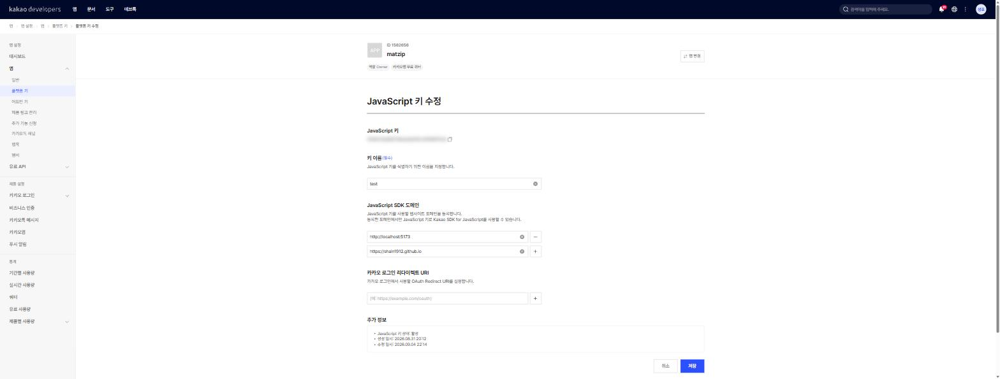
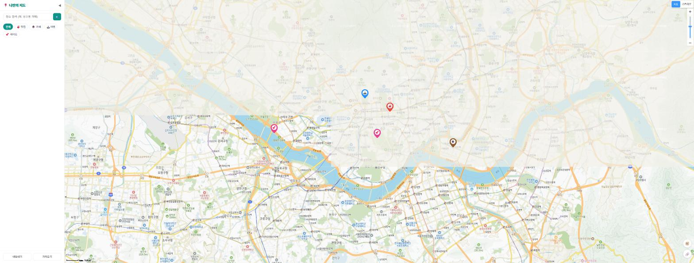

25장 GitHub Pages 배포¶
이 장에서 배우는 것
npm run build로 배포용 파일 묶음(dist폴더)을 만들고 그 안에 뭐가 들었는지 살펴봅니다vite.config.js에base: '/리포이름/'을 설정해야 하는 이유 — Pages의 하위 경로 문제를 이해합니다- GitHub Actions 워크플로(
deploy.yml)로 푸시할 때마다 자동 배포되는 파이프라인을 만듭니다 - 리포지토리 Secrets에 카카오 JS 키를 등록하고 빌드에 주입하는 법을 배웁니다
- 카카오 개발자 콘솔에
https://아이디.github.io도메인을 추가합니다 (안 하면 지도가 안 뜹니다) - 전 세계 누구나 접속할 수 있는 내 지도 앱의 주소를 손에 넣습니다
24장에서 우리 코드는 GitHub에 올라갔습니다. 리포지토리 페이지를 열면 소스 코드가 보기 좋게 진열되어 있죠. 하지만 아직은 코드의 전시장일 뿐, 앱이 아닙니다. 친구에게 리포 주소를 보내면 "이게 뭐야? js 파일 목록인데?"라는 답이 돌아올 겁니다. 친구가 보고 싶은 건 코드가 아니라 움직이는 지도니까요.
지금까지 우리 지도는 npm run dev가 켜진 내 컴퓨터의 localhost:5173에서만 살았습니다. localhost는 이름 그대로 "내 컴퓨터"라는 뜻이라, 내가 노트북을 덮는 순간 지도도 함께 잠듭니다. 이번 장에서 이 지도를 GitHub의 무료 호스팅 서비스인 GitHub Pages1에 올립니다. 끝나면 https://아이디.github.io/my-map/이라는, 24시간 깨어 있는 진짜 주소가 생깁니다. 서버 임대료는 0원. 게다가 GitHub Actions라는 로봇 비서를 붙여서, 앞으로는 git push만 하면 배포까지 자동으로 굴러가게 만들 겁니다. 배포는 처음 세팅이 8할입니다. 오늘 딱 한 번 공들여 두면, 다음부터는 푸시가 곧 배포입니다.
25.1 npm run build — 배포용 짐 싸기¶
개발할 때 우리는 npm run dev를 씁니다. 그런데 8장에서 만든 package.json을 다시 보면 스크립트가 하나 더 있었죠.
dev와 build는 하는 일이 다릅니다. dev는 개발용 임시 서버입니다. 파일을 고치면 즉시 반영해 주는 대신, 내 컴퓨터에서만 돌고 파일도 개발하기 좋은 형태 그대로 둡니다. 반면 build는 이사용 짐 싸기입니다. 흩어져 있는 js 모듈들을 합치고, 공백을 지워 용량을 줄이고, 브라우저가 바로 열 수 있는 완성품 폴더 하나로 압축 포장합니다. 이 완성품은 Vite 없이도, Node 없이도, 그냥 파일만 갖다 놓으면 어느 웹서버에서든 동작합니다. 배포란 결국 이 완성품 폴더를 인터넷 어딘가에 올려놓는 일입니다.
직접 짐을 싸 봅시다. 터미널에서 프로젝트 폴더로 이동해 실행하세요.
몇 초 만에 이런 출력이 나옵니다.
vite v7.1.0 building for production...
✓ 14 modules transformed.
dist/index.html 0.72 kB │ gzip: 0.41 kB
dist/assets/index-Dk3xUxtB.css 4.21 kB │ gzip: 1.35 kB
dist/assets/index-C4f9x2ma.js 18.6 kB │ gzip: 6.02 kB
✓ built in 384ms

프로젝트에 dist라는 새 폴더가 생겼습니다. distribution(배포판)의 준말입니다. 열어 보면 단출합니다 — index.html 하나와 assets 폴더 속 css·js 파일 몇 개. 우리가 src에 나눠 담았던 loader.js, mapView.js, store.js, search.js… 그 많던 모듈이 전부 js 파일 하나로 합쳐졌습니다. 파일 이름에 붙은 C4f9x2ma 같은 무작위 꼬리표는 내용이 바뀔 때마다 달라지는 지문인데, 브라우저 캐시가 옛 파일을 고집하지 못하게 하는 장치입니다.
여기서 조용히 벌어진 중요한 사건이 하나 있습니다. 합쳐진 js 파일을 열어 검색해 보면 import.meta.env.VITE_KAKAO_JS_KEY라는 코드가 사라지고 그 자리에 키 문자열이 박혀 있습니다. .env는 개발할 때 Vite가 읽어 주는 파일일 뿐, 완성품에는 동봉되지 않습니다. 대신 빌드하는 순간 그 값이 코드에 도장처럼 새겨집니다. 즉 빌드가 일어나는 컴퓨터에 키가 준비되어 있어야 완성품에도 키가 들어갑니다. 이 사실을 기억해 두세요. 잠시 후 GitHub의 컴퓨터가 대신 빌드하게 될 때 이 지점이 복선으로 돌아옵니다.
💡 팁
빌드 결과를 배포 전에 미리 보고 싶으면 npm run preview를 실행하세요. dist 폴더를 실제 서비스처럼 띄워 주는 시식 코너입니다(주소는 대개 localhost:4173). dev 서버가 아니라 빌드된 완성품을 보여 준다는 점이 다릅니다. 그리고 dist는 언제든 다시 만들 수 있는 결과물이므로 git에 올리지 않습니다 — Vite 템플릿의 .gitignore에 이미 등록되어 있습니다.
25.2 base 설정 — 내 앱의 주소는 뿌리가 아니다¶
바로 배포하고 싶지만, 그 전에 손봐야 할 함정이 하나 있습니다. 이걸 건너뛰면 배포 후 하얀 화면만 뜨는 유명한 사고가 납니다.
GitHub Pages가 주는 주소를 잘 보세요. https://아이디.github.io/my-map/ — 내 앱이 도메인의 뿌리(/)가 아니라 /my-map/이라는 하위 경로에 세들어 삽니다. 아이디 하나가 github.io의 방 한 칸을 받고, 리포마다 그 아래 골목 하나씩을 배정받는 구조라서요. 그런데 Vite는 기본적으로 앱이 뿌리에 산다고 가정하고 짐을 쌉니다. dist/index.html을 열어 보면 이렇게 적혀 있죠.
맨 앞의 /는 "도메인 뿌리부터"라는 뜻입니다. 브라우저는 이 파일을 https://아이디.github.io/assets/...에서 찾습니다. 하지만 실제 파일은 https://아이디.github.io/my-map/assets/...에 있으니 전부 404. html은 열렸는데 js·css를 하나도 못 받아서 화면이 하얗게 비는 겁니다. 택배 주소에 "서울시 3번지"까지만 쓰고 동네 이름을 빼먹은 셈이죠.

해결책은 Vite에게 "우리 집 주소는 /my-map/ 골목이야"라고 알려 주는 것입니다. 프로젝트 뿌리의 vite.config.js 파일이 그 자리인데, 우리 프로젝트에는 아직 이 파일이 없습니다(지금까지는 기본 설정으로 충분했으니까요). Claude Code에게 시킵시다.
🗣 이렇게 시키세요
이 프로젝트를 GitHub Pages에 배포할 거야. 리포 이름이 my-map이라서 https://아이디.github.io/my-map/ 하위 경로로 서비스돼. vite.config.js를 만들어서 base를 '/my-map/'으로 설정해줘. 다른 옵션은 건드리지 마.
Claude Code가 만들어 준 vite.config.js입니다. 전부 다섯 줄입니다.
// vite.config.js — Vite 설정 파일 (프로젝트 뿌리에 위치)
import { defineConfig } from 'vite';
export default defineConfig({
base: '/my-map/', // GitHub Pages 하위 경로 = /리포이름/
});
base는 "빌드 결과물 속 모든 경로 앞에 이 접두사를 붙여라"라는 옵션입니다. 값은 반드시 여러분의 리포 이름과 글자 하나까지 같아야 하고, 양쪽 슬래시도 필수입니다. 24장에서 리포를 my-map이 아닌 다른 이름으로 만들었다면 그 이름을 쓰세요. 저장 후 npm run build를 다시 돌려 dist/index.html을 열면 경로가 /my-map/assets/...로 바뀌어 있을 겁니다. 참고로 base는 개발 서버에도 적용됩니다. 이제 npm run dev를 켜면 접속 주소가 http://localhost:5173/my-map/ 으로 바뀌니, 주소가 달라졌다고 당황하지 마세요(뿌리 /로 들어가면 Vite가 /my-map/으로 가 보라는 안내를 띄워 줍니다). 카카오 SDK 도메인 등록은 경로를 보지 않으므로 기존 http://localhost:5173 등록은 그대로 유효합니다.
푸시하기 전에 로컬에서 완성품을 한 번 검증합시다. npm run build 후 npm run preview를 실행하고, 브라우저에서 base 경로까지 포함한 http://localhost:4173/my-map/으로 접속해 하얀 화면 없이 앱이 뜨는지 확인하세요. dist/index.html을 파일로 직접 여는 것은 경로 기준이 달라 정확한 검증이 안 됩니다 — 배포 환경과 같은 조건으로 시식하는 방법이 preview입니다.
25.3 GitHub Actions — 푸시하면 알아서 배포하는 로봇¶
이제 dist를 GitHub Pages에 올릴 차례입니다. 수동으로 올리는 방법도 있긴 합니다. 하지만 그러면 코드를 고칠 때마다 "빌드하고, 올리고"를 손으로 반복해야 하고, 언젠가 한 번은 빌드를 잊고 옛 버전을 올리는 사고가 납니다. 우리는 처음부터 자동화로 갑니다. 도구는 GitHub Actions2 — 리포에 어떤 일(예: push)이 생기면 GitHub의 컴퓨터가 우리가 적어 둔 작업 순서를 대신 실행해 주는 서비스입니다. 로봇 비서에게 붙여 줄 업무 매뉴얼을 워크플로라고 부르고, .github/workflows/ 폴더의 YAML 파일로 작성합니다.
매뉴얼을 바닥부터 쓸 필요는 없습니다. Vite 공식 문서가 GitHub Pages 배포용 워크플로 가이드를 제공하거든요. 아래 예제는 그 공식 가이드를 바탕으로 한 예시입니다. Claude Code에게 그 가이드를 따라 만들어 달라고 하되, 우리 사정 하나 — 카카오 키 — 를 조건에 끼워 넣습니다.
🗣 이렇게 시키세요
GitHub Pages에 자동 배포하는 GitHub Actions 워크플로를 .github/workflows/deploy.yml로 만들어줘. Vite 공식 정적 배포 가이드를 참고해서: main에 push되면 checkout → setup-node(Node 20, npm 캐시) → npm ci → npm run build → configure-pages로 Pages 설정을 준비하고 → dist를 upload-pages-artifact로 올리고 deploy-pages로 배포. 빌드 단계에서 VITE_KAKAO_JS_KEY 환경변수를 리포 Secrets에서 읽어 넣어줘.
Claude Code가 만들어 준 .github/workflows/deploy.yml 전체입니다. 이 책에서 가장 긴 설정 파일이지만, 겁먹지 않아도 됩니다. 한 줄씩 읽으면 그냥 업무 매뉴얼입니다.
# .github/workflows/deploy.yml — main에 push되면 빌드해서 Pages로 배포
name: Deploy to GitHub Pages
on:
push:
branches: [main] # main 브랜치에 push될 때마다 실행
workflow_dispatch: # Actions 탭에서 수동 실행 버튼도 제공
permissions:
contents: read # 코드 읽기
pages: write # Pages에 배포하기
id-token: write # 배포 신원 증명용
concurrency:
group: pages
cancel-in-progress: true # 연달아 push하면 진행 중이던 옛 배포는 취소
jobs:
build:
runs-on: ubuntu-latest # GitHub이 빌려주는 리눅스 컴퓨터에서
steps: # (액션 버전은 GitHub 공식 문서에서 최신을 확인하세요)
- uses: actions/checkout@v5 # 1) 리포 코드를 내려받고
- uses: actions/setup-node@v5 # 2) Node.js를 설치하고
with:
node-version: 20
cache: npm
- run: npm ci # 3) 의존성 설치 (lock 파일 그대로)
- run: npm run build # 4) 빌드!
env:
VITE_KAKAO_JS_KEY: ${{ secrets.VITE_KAKAO_JS_KEY }} # 금고에서 키 꺼내 주입
- uses: actions/configure-pages@v5 # 5) Pages 배포에 필요한 설정 준비
- uses: actions/upload-pages-artifact@v4
with:
path: dist # 6) dist 폴더를 배포 꾸러미로 제출
deploy:
needs: build # build가 성공해야 시작
runs-on: ubuntu-latest
environment:
name: github-pages
url: ${{ steps.deployment.outputs.page_url }}
steps:
- id: deployment
uses: actions/deploy-pages@v4 # 7) 제출된 꾸러미를 Pages에 개시
뼈대부터 봅시다. on은 언제 — main에 push될 때(그리고 필요하면 수동 버튼으로도). jobs는 무엇을 — build와 deploy 두 단계입니다. build 작업은 GitHub이 빌려주는 우분투 컴퓨터에서 우리가 로컬에서 하던 일을 그대로 재연합니다. 코드 받기(checkout), Node 설치(setup-node), 의존성 설치(npm ci — npm install의 꼼꼼한 버전으로, package-lock.json에 적힌 버전을 정확히 맞춰 설치합니다), 그리고 npm run build. 빌드가 끝나면 configure-pages가 Pages 배포에 필요한 설정을 준비해 주고(처음 Pages를 켜는 리포에서 특히 든든한 단계입니다), 완성된 dist는 upload-pages-artifact가 배포 꾸러미로 포장해 제출하고, 이어지는 deploy 작업의 deploy-pages가 그 꾸러미를 실제 Pages 서버에 개시합니다. uses:로 불러 쓰는 actions/checkout@v5 같은 것들은 GitHub이 공식 배포하는 기성 부품입니다(버전 숫자는 계속 올라가니, 최신 버전은 GitHub 문서에서 확인하세요). 남이 잘 만든 부품을 조립만 하는 것, 어디서 많이 본 방식이죠. 바이브코딩과 같은 철학입니다.
작업을 굳이 build와 deploy 둘로 나눈 것도 이유가 있습니다. 만들기와 내보내기를 분리해 두면, 빌드가 실패했을 때 어설픈 반제품이 서비스에 올라가는 일이 원천 차단됩니다. needs: build 한 줄이 "빌드가 초록불일 때만 배포를 시작하라"는 안전장치죠. 위쪽의 permissions는 이 로봇에게 허락된 권한 목록입니다. 코드는 읽기만, Pages에는 쓰기 가능 — 4장에서 Claude Code의 권한 프롬프트를 이야기할 때처럼, 자동화된 일꾼에게는 딱 필요한 만큼만 권한을 주는 것이 기본기입니다.
⚠️ 주의
이 워크플로는 my-map 리포지토리 루트에 package.json이 있는 표준 구성(24장에서 우리가 만든 구조) 기준입니다. 만약 앱이 리포의 하위 폴더(예: app/) 안에 들어 있는 변형 구성이라면, 루트에서 npm ci를 실행하다 "package.json을 찾을 수 없다"며 즉시 실패합니다. 그런 구조에서는 run 단계마다 working-directory: app을 지정하고, setup-node의 캐시 경로(cache-dependency-path: app/package-lock.json)와 아티팩트 경로(path: app/dist)도 함께 고쳐야 합니다. Actions가 첫 단계부터 빨간 X라면 이 구조 차이부터 의심하세요.
가장 눈여겨볼 곳은 빌드 단계의 env: 두 줄입니다. 25.1절의 복선을 회수할 시간입니다. 빌드하는 컴퓨터에 키가 있어야 완성품에 키가 새겨진다고 했죠. 그런데 이번에 빌드하는 컴퓨터는 GitHub의 컴퓨터이고, 우리의 .env 파일은 24장에서 .gitignore로 막아 뒀기 때문에 GitHub에는 없습니다. 그대로 두면 빌드는 성공해도 키가 비어 있어서, 배포된 지도는 "VITE_KAKAO_JS_KEY가 .env에 없습니다" 오류만 내뱉게 됩니다. 그래서 GitHub이 제공하는 금고, Secrets에 키를 맡겨 두고 ${{ secrets.VITE_KAKAO_JS_KEY }} 문법으로 빌드 순간에만 환경변수로 꺼내 쓰는 겁니다.
금고에 키를 넣으러 갑시다. 브라우저에서 내 리포 페이지를 열고 Settings → Secrets and variables → Actions → New repository secret 순서로 들어갑니다. Name에는 정확히 VITE_KAKAO_JS_KEY, Secret 칸에는 7장에서 발급받은 여러분의 JS 키를 붙여 넣고 Add secret을 누릅니다.

한번 저장한 Secret은 GitHub도 다시 보여 주지 않습니다(수정·삭제만 가능). 리포가 public이어도 Secrets는 공개되지 않고, 워크플로 실행 기록에서도 값이 ***로 가려집니다.
💡 팁
5장에서 설치한 gh CLI로는 터미널에서 한 줄입니다. gh secret set VITE_KAKAO_JS_KEY를 실행하면 값을 붙여 넣으라는 프롬프트가 나오고, 붙여 넣으면 등록 끝. 브라우저를 오갈 필요가 없어서 저는 늘 이 방법을 씁니다.
⚠️ 주의
"어차피 JS 키는 배포된 js 파일에 새겨져서 누구나 볼 수 있는데, 왜 Secrets씩이나?"라는 의문이 들 수 있습니다. 예리한 지적입니다. 카카오 JS 키는 애초에 브라우저에 노출되는 것을 전제로 만들어졌고, 그래서 7장에서 배운 도메인 제한이 진짜 자물쇠 역할을 합니다. 그래도 Secrets를 쓰는 이유는 ①리포 소스 코드에 키를 하드코딩하지 않는 습관 — 나중에 REST API 키·DB 비밀번호처럼 절대 노출되면 안 되는 값을 다룰 때도 같은 방식을 그대로 쓸 수 있고 ②키를 바꿀 때 코드 수정 없이 금고만 갈아 끼우면 되기 때문입니다. 지금 올바른 습관을 들여 두는 겁니다.
25.4 Settings → Pages — 배포 방식 선택¶
부품이 다 모였습니다. 마지막 스위치 하나만 켜면 됩니다. GitHub Pages에게 "배포물은 Actions가 가져다줄 거야"라고 알려 주는 설정입니다. 리포 페이지에서 Settings → Pages로 들어가, Build and deployment 아래 Source 드롭다운을 GitHub Actions로 바꿉니다. 저장 버튼은 따로 없고 선택 즉시 적용됩니다.

드롭다운에 있는 다른 선택지 "Deploy from a branch"는 특정 브랜치의 파일을 그대로 서비스하는 옛 방식입니다. 빌드 결과물을 브랜치에 직접 커밋해야 해서 우리 같은 빌드형 프로젝트에는 번거롭습니다. 요즘 표준은 방금 고른 GitHub Actions 방식입니다.
이제 발사 준비 완료입니다. 오늘 만든 파일들 — vite.config.js와 .github/workflows/deploy.yml — 을 커밋하고 푸시합시다. 24장에서 배운 그대로입니다.
git add vite.config.js .github/workflows/deploy.yml
git commit -m "GitHub Pages 자동 배포 설정 (vite base + Actions 워크플로)"
git push
푸시가 끝나자마자 브라우저에서 리포의 Actions 탭을 열어 보세요. 방금 커밋 메시지를 단 워크플로가 노란 점(실행 중)으로 돌고 있을 겁니다. 클릭하면 build → deploy 두 작업이 순서대로 진행되는 모습을 실시간 중계로 볼 수 있습니다. GitHub의 컴퓨터가 저 멀리서 Node를 깔고 우리 앱을 빌드하는 중입니다. 1~2분 뒤 두 작업 모두 초록 체크로 바뀌면 성공입니다.

deploy 작업 아래에 배포 주소가 링크로 떠 있습니다 — https://아이디.github.io/my-map/. 우리 지도의 새 집 주소입니다. 두근거리는 마음으로 클릭해 봅시다. 그런데… 페이지는 열리는데 지도가 안 뜨거나, 콘솔(++f12++)에 403 오류가 찍혀 있을 겁니다. 당황하지 마세요. 정상입니다. 마지막 관문이 하나 남았거든요.
25.5 카카오 콘솔에 새 주소 신고하기¶
7장을 떠올려 보세요. 카카오 JS 키에는 도메인 자물쇠가 걸려 있어서, 등록된 도메인에서 온 요청만 받아 줍니다. 우리가 등록해 둔 도메인은 http://localhost:5173 하나뿐이고요. 그러니 github.io에서 날아온 요청을 카카오 서버가 "누구세요?" 하며 403으로 돌려보내는 건 자물쇠가 일을 제대로 하고 있다는 증거입니다. 새 주소를 신고해서 출입 명단에 올려 주면 됩니다.
developers.kakao.com에 로그인 → 전체 앱에서 우리 앱 선택 → 앱 > 플랫폼 키에서 JavaScript 키를 클릭해 JavaScript SDK 도메인 수정으로 들어갑니다. 기존 http://localhost:5173 아래에 한 줄을 추가하고 저장하세요.

세 가지를 조심하세요. 첫째, 아이디 자리에 여러분의 GitHub 아이디를 넣어야 합니다 — 7장에서 배웠듯 프로토콜은 하나만 등록해도 양쪽에서 인정되지만 호스트는 한 글자만 달라도 다른 주소 취급입니다. 둘째, 뒤에 /my-map/ 경로는 붙이지 않습니다. 도메인 등록은 https://호스트 단위까지만 받고, 그 도메인 아래 모든 경로에 적용됩니다. 셋째, 실제 서비스 주소 그대로 https로 적어 두면 헷갈릴 일이 없습니다(GitHub Pages는 https로 서비스됩니다). 저장했다면 배포된 페이지로 돌아가 강력 새로고침(++ctrl+shift+r++)을 해 보세요. 지도가 뜹니다!
이 관문을 잊으면 어떻게 되는지 한 번 더 강조하겠습니다. Actions는 초록 체크, 페이지도 열림, 그런데 지도만 안 뜸 — 이 조합이 나오면 십중팔구 도메인 미등록입니다. 배포 자체는 성공했는데 카카오 SDK 요청만 403으로 막힌 상황이니까요. 콘솔의 403 오류와 함께 부록 B 트러블슈팅 표에도 올라갈 단골손님입니다.
25.6 배포 확인 — 세계 어디서나 열리는 내 지도¶
이제 제대로 검수해 봅시다. https://아이디.github.io/my-map/에서 확인할 것들입니다.
- 지도가 뜬다 — 도메인 등록까지 통과했다는 뜻입니다.
- 마커·말풍선·필터·검색이 동작한다 — 검색(15장)도 같은 JS 키를 쓰므로 함께 풀립니다.
- 장소 추가와 새로고침 유지 — localStorage(17장)는 브라우저에 저장되므로 배포 후에도 동작합니다. 다만 도메인별 금고라서 localhost에서 모은 장소는 안 보입니다. 17장의 내보내기/가져오기로 옮길 수 있죠 — 그 기능이 여기서 또 효자 노릇을 합니다.
- 내 위치 버튼 — 20장에서 "https에서만 동작한다"고 했는데, Pages는 https라서 통과입니다.
- 스마트폰으로 접속 — 23장의 모바일 대응을 실기기에서 검증할 기회입니다. PC와 같은 와이파이일 필요도 없습니다. 진짜 인터넷이니까요.

이 주소를 친구에게 보내 보세요. 다만 한 가지는 미리 알려 주는 게 좋습니다. 친구가 여는 지도는 여러분이 공들여 채운 지도가 아니라 빈 지도라는 것. localStorage는 각자의 브라우저에 저장되는 개인 금고라서, 여러분의 장소 데이터는 여러분의 브라우저에만 있습니다. 친구는 친구대로 자기 장소를 채워 자기만의 지도를 만들게 되는 거죠. 같은 앱, 각자의 데이터 — 이게 지금 구조의 특징이자 한계입니다. 모두가 같은 데이터를 보게 하려면 서버와 데이터베이스가 필요한데, 그 이야기는 26장의 다음 단계 로드맵에서 다시 만납니다.
마지막으로 자동화가 진짜인지 시험해 봅시다. 코드를 아무거나 살짝 고쳐 보세요 — 예를 들어 index.html의 <title>을 "OO의 맛집 지도"로 바꾸고, 커밋, 푸시. Actions 탭에 새 워크플로가 저절로 돌기 시작하고, 1~2분 뒤 배포 주소를 새로고침하면 바뀐 제목이 반영되어 있습니다. 이것이 오늘 세팅의 진짜 수확입니다. 이제 배포를 의식할 필요가 없습니다. 다음 장에서 README를 다듬든, 나중에 새 기능을 붙이든, 여러분이 할 일은 늘 하던 커밋과 푸시뿐입니다.
💡 팁
반영이 안 된 것처럼 보이면 우선 Actions 탭에서 워크플로가 끝났는지 확인하고, 끝났다면 강력 새로고침(++ctrl+shift+r++)을 해 보세요. 브라우저가 옛 파일을 캐시에서 꺼내 주는 경우가 대부분입니다. Actions에 빨간 X가 떴다면 실패한 단계를 클릭해 로그를 복사한 뒤 Claude Code에게 붙여 넣고 "이 GitHub Actions 로그 보고 원인 찾아서 고쳐줘"라고 시키세요. 배포 디버깅도 바이브코딩으로 합니다.
25.7 마무리¶
📌 핵심 요약
npm run build는 앱을 정적 파일 완성품dist폴더로 포장하며,.env의VITE_값은 이때 코드에 새겨지므로 빌드하는 컴퓨터에 키가 있어야 합니다.- GitHub Pages는 앱을
https://아이디.github.io/리포이름/하위 경로에 서비스하므로,vite.config.js에base: '/리포이름/'을 설정해야 하얀 화면을 피할 수 있습니다.base는 dev 서버에도 적용되어 개발 주소가localhost:5173/리포이름/이 되며, 푸시 전에는npm run preview(4173 포트, base 경로 포함 접속)로 완성품을 검증합니다. .github/workflows/deploy.yml워크플로는 main에 push될 때마다 checkout → setup-node →npm ci→npm run build→configure-pages→upload-pages-artifact(dist) →deploy-pages순서로 자동 배포합니다(리포 루트에 package.json이 있는 구성 기준)..env는 GitHub에 없으므로 카카오 JS 키를 리포 Secrets(VITE_KAKAO_JS_KEY)에 등록하고 빌드 단계env:로 주입합니다. Settings → Pages의 Source는 GitHub Actions로 선택합니다.- 카카오 개발자 콘솔 플랫폼 키 → JavaScript 키의 JavaScript SDK 도메인에
https://아이디.github.io를 추가해야 배포된 지도가 뜹니다(경로 없이 도메인까지만, https로).
🤔 생각해보기
Q1. 워크플로의 빌드 단계에서 env: 두 줄을 지우고 배포하면, Actions는 초록 체크가 뜰까요 빨간 X가 뜰까요? 그리고 배포된 페이지에서는 무슨 일이 벌어질까요? "키가 새겨지는 시점"을 중심으로 추리해 보세요.
✍️ ________
✍️ ________
Q2. 배포된 지도가 403으로 안 뜨는 문제와, 하얀 화면만 나오는 문제는 원인이 서로 다릅니다. 각각 어떤 설정과 연결되는지 짝지어 설명해 보세요.
✍️ ________
✍️ ________
✏️ 연습 문제
npm run build후dist/assets의 js 파일을 에디터로 열어, 여러분의 JS 키 문자열이 실제로 새겨져 있는지 검색으로 확인해 보세요.vite.config.js의base를 일부러'/wrong-name/'으로 바꿔 푸시한 뒤 배포 페이지가 어떻게 망가지는지 관찰하고(개발자도구 Network 탭의 404들을 확인), 원래대로 되돌려 다시 푸시하세요.- Actions 탭에서 성공한 워크플로를 클릭해 build 작업의
npm run build단계 로그를 열어 보세요. 로컬 터미널에서 보던 것과 같은 Vite 출력이 있는지, Secrets 값이 로그에 노출되는지 확인해 보세요. workflow_dispatch덕분에 생긴 수동 실행 기능을 써 봅시다. Actions 탭에서 워크플로를 선택하고 Run workflow 버튼으로 푸시 없이 재배포해 보세요.
🔎 더 찾아보기
커스텀 도메인 (Custom domain)— 내 소유 도메인(예: mymap.co.kr)을 사서 Pages에 연결하는 방법. Settings → Pages에서 설정합니다.Netlify · Vercel · Cloudflare Pages— GitHub Pages의 대안이 되는 무료 정적 호스팅 서비스들. 리포를 연결하면 자동 배포까지 알아서 해 줍니다.GitHub Actions marketplace— checkout, setup-node처럼 남이 만든 액션 부품을 검색해 조립하는 장터.환경변수 vs Secrets vs Variables— GitHub Actions에서 민감한 값과 그냥 설정값을 구분해 관리하는 세 가지 방법.
다음 장 예고 — 지도 앱이 드디어 인터넷에 살아 숨쉬고 있습니다. 하지만 리포에 들어온 사람이 처음 보는 건 앱이 아니라 README입니다. 26장에서는 스크린샷 찍는 법부터 기능 소개, 배포 링크, 기술 스택까지 갖춘 README를 써서 리포의 첫인상을 완성하고, 친구들에게 자랑하는 법과 이 책 이후의 로드맵으로 여정을 마무리합니다.